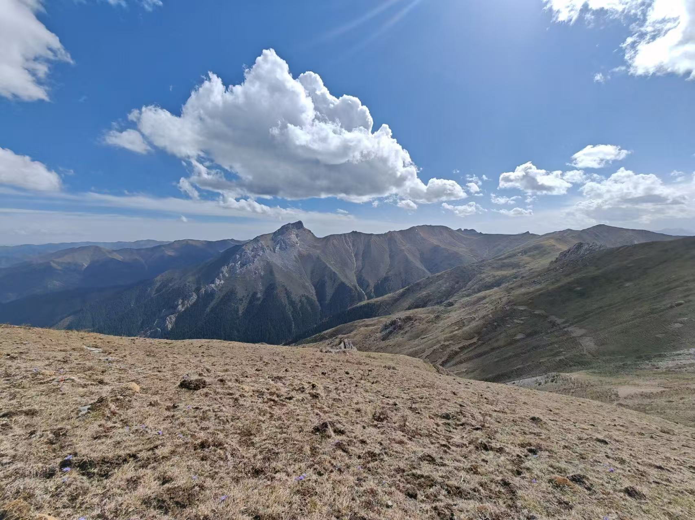
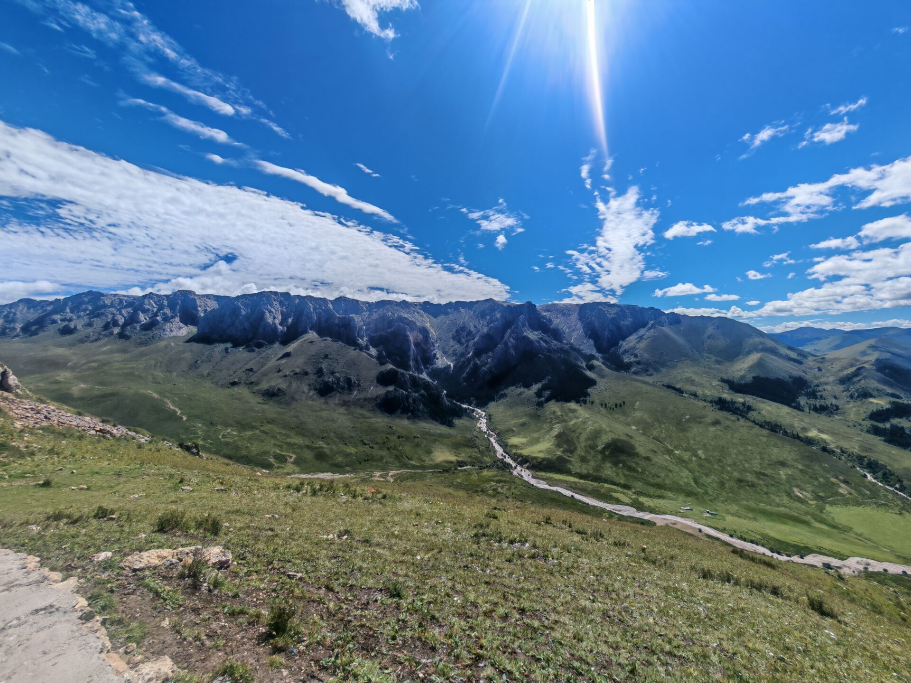

一、地图上的中国视角
📍 拖动/缩放地图，观察迭部在中国三级阶梯中的位置
当前视角：中国全域尺度二、核心知识点解析
1. 地势阶梯：站在第一级与第二级之间
中国地势“西高东低，呈三级阶梯状分布”，第一级阶梯以青藏高原为主体，平均海拔 4000 米以上；第二级阶梯以高原和盆地为主，海拔多在 1000—2000 米。迭部恰恰站在这两级阶梯的交界地带。
有资料明确指出，迭部地处“中国地势三级阶梯中第一阶梯和第二阶梯的交界地带”。全境最低处约 1500 米，最高处达 4920 米，同一县域内海拔跨越近 3500 米，让教材上的“阶梯过渡”变得具体可感。

高原草甸2. 山脉格局：秦岭西延与岷迭山系
人教版八年级上册“中国的地形”要求学生掌握中国主要山脉的走向与分布。迭部位于“南秦岭西延岷、迭山系之间”，白龙江干流自西向东横穿全境，将群山分割为南北两部分：江北山地统称迭山，江南山地统称岷山。
岷山是教材中提到的南北走向山脉之一，而迭山则属于秦岭西延的组成部分。在地图上找到迭部，就能直观看到“东西走向的秦岭”与“南北走向的岷山”在甘肃南部交汇的具体样貌。

秦岭西延与岷山交汇地带的山地景观（示意）3. 气候特征：过渡带上的非典型气候
迭部的气候被描述为“非典型性大陆性气候”，处于“大陆气候与海洋性气候的过渡带”。具体表现为：冬无严寒、夏无酷暑，年平均气温 8—11℃，降水量 634.6 毫米，多集中在 5—9 月。
这一气候特征的形成，与迭部所处的地理位置直接相关。它既受到来自东南的季风影响（降水集中在夏季），又因深居内陆、海拔较高而带有大陆性特征。教材在讲“中国气候”时强调“海陆位置”和“地形”对气候的影响，迭部恰好是一个可以同时讨论这两个因素的案例。
更直观的气候—植被关联体现在山坡上：阳坡接受太阳辐射多、蒸发强、水分条件差，只能生长草坡和农田；阴坡气温低、蒸发弱、降水条件好，云杉林茂密生长。教材中“气候影响植被”的抽象表述，在这里变成了可以亲眼观察的坡向差异。
4. 水系分水岭：一县跨两流域
迭部的水系格局，直接对应教材中关于“长江与黄河分水岭”的知识点。境内河流绝大多数属于白龙江水系，白龙江是嘉陵江上游最大支流，最终汇入长江。但北部迭山主脉脊线以北的极小区域，属于洮河水系，而洮河是黄河上游支流。
这意味着迭部北部山区是长江水系与黄河水系的分水岭所在。教材在讲中国河流时，通常会强调秦岭—淮河作为南北分界的重要意义。迭部的独特之处在于，它提供了一个更微观的观察窗口：在同一个县的范围内，学生可以看到两条大河的支流从同一片山系的不同坡面流出，各自奔向不同的海洋方向。
白龙江（长江支流）与洮河（黄河支流）在迭部北部迭山分水，这种地理事实让“分水岭”从地图上的线条变成了可以实地理解的山水关系。
三、教材链接与课标对应
| 对应教材章节 | 核心知识点 | 本页面的教学切入点（迭部案例） | 核心素养 |
|---|---|---|---|
| 八年级上册第二章 中国的自然环境 第一节 地形和地势 |
我国地势三级阶梯的分布特征及主要分界线。 | 迭部位于第一、二级阶梯过渡带，全境海拔 1500—4920 米，可在阶梯示意图上标注迭部，观察其与分界线的关系。 | 区域认知：识别迭部在三级阶梯中的位置；综合思维：理解地形对海拔、气候等要素的综合影响。 |
| 八年级上册第二章 中国的自然环境 第一节 地形和地势 |
我国主要山脉的走向与分布。 | 迭部处于秦岭西延（东西向）与岷山（南北向）交汇处，对比教材山脉分布图，找出迭部所在的山系位置。 | 区域认知：在地图上定位山系并判断走向；地理实践力：通过地图观察山脉交汇关系。 |
| 八年级上册第二章 中国的自然环境 第二节 气候 |
气候受海陆位置、地形等因素影响；气候对植被的影响。 | 迭部为非典型性大陆性气候，阳坡草坡/阴坡森林的坡向差异，可用来解释“地形如何改变局部气候与植被”。 | 综合思维：分析海陆位置、地形与气候的相互关系；人地协调观：理解坡向差异对植被与农业的影响。 |
| 八年级上册第二章 中国的自然环境 第三节 河流 |
长江与黄河的分水岭；外流河的水文特征。 | 北部迭山为白龙江（长江）与洮河（黄河）分水岭，在白龙江流域图上标出分水岭位置，理解“一县跨两流域”。 | 区域认知：认识流域归属与分水岭空间位置；综合思维：理解水系与地形的关联；地理实践力：读图标注分水岭。 |
四、互动探究任务
任务：在中国地形图上“定位”迭部
观察交互地图上的迭部位置，回答以下问题：迭部位于哪两级阶梯的交界处？它北侧和南侧的山脉分别属于什么走向？白龙江最终汇入哪条大河？